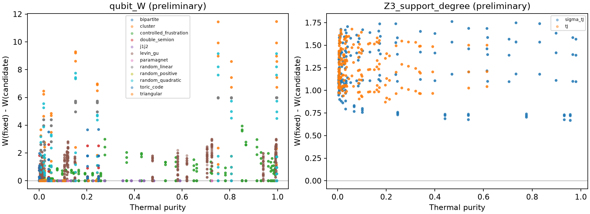

2026-10-26T20:20:04.862979+00:00
首批盲扫描已结束，本次保存 3438 个已冻结实验点；完整方案的最终验收尚未结束。
| 实验轨道 | 已冻结点数 |
| A | 594 |
| B | 162 |
| C | 144 |
| D | 270 |
| E | 1296 |
| F | 972 |
Levin–Gu 在源格点的弱信号没有通过全部新温度与 12 自旋迁移检验，不能认定为稳定发现。 纯态 TC/DS、混合 Gibbs 算符和 qutrit 指标分别报告。Walshness 降低不等同于恢复符号规则。
受控受挫开链 λ=0.4 的边界 CZ 修正在独立温度与尺寸（到 n=12）上优于最佳一次相位；邻近耦合并非全部通过，不能推广为整个参数区间的结论。条件性学习对照已完成 1728 个网络。

汇总 · 内容与复现说明 · 全部指标 · 后验评分 · 独立迁移检验 · 测试记录
快照包含最优轴/电路、各初值目标值、预算、种子与已有物理诊断。大型矩阵、可靠性掩码、优化轨迹和训练检查点未上传。